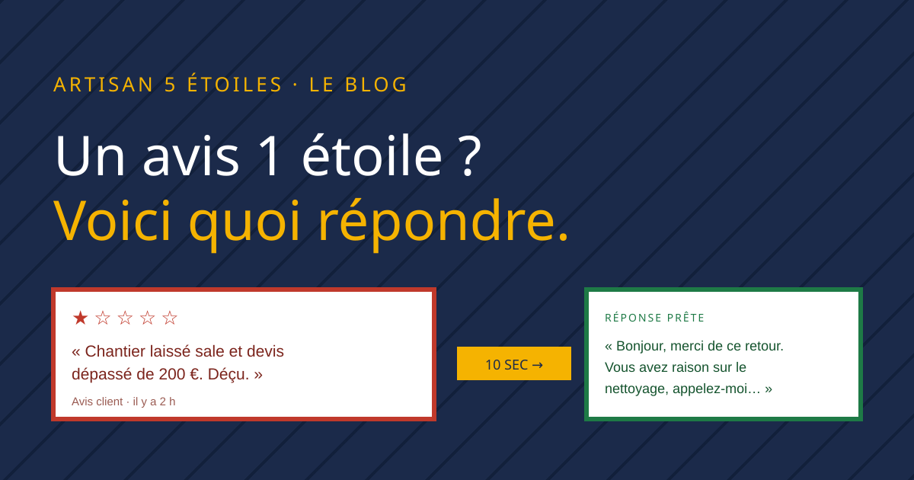
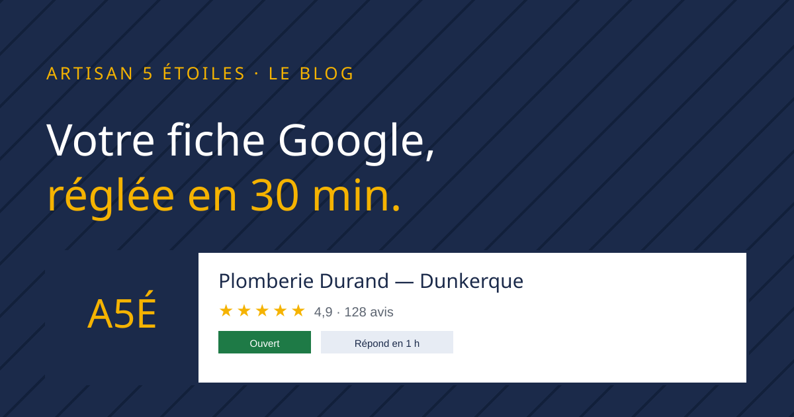
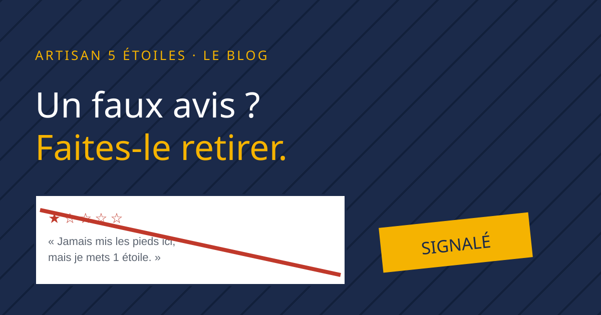

Gestion des avis
Répondre à un avis Google négatif : 7 exemples pour artisans
La méthode en 4 temps pour désamorcer un avis à 1 étoile, plus 7 réponses prêtes à copier selon la situation.
Des guides concrets, écrits pour les artisans qui n'ont pas le temps : répondre aux avis, en récolter plus, et faire remonter votre fiche dans les recherches locales.

La méthode en 4 temps pour désamorcer un avis à 1 étoile, plus 7 réponses prêtes à copier selon la situation.
Le bon moment pour demander, 3 scripts SMS testés, le QR code de fin de chantier, et ce que Google interdit.

La checklist point par point : catégories, photos, zone d'intervention, horaires et posts pour une fiche irréprochable.

Les cas où c'est possible, le signalement étape par étape, les recours DGCCRF et quoi faire en attendant.
Les 3 piliers du classement local Google, le rôle décisif des avis, et un plan d'action en 5 étapes.
Collez un avis, choisissez votre métier et votre ton, obtenez une réponse professionnelle en 10 secondes. 3 essais gratuits, sans inscription.